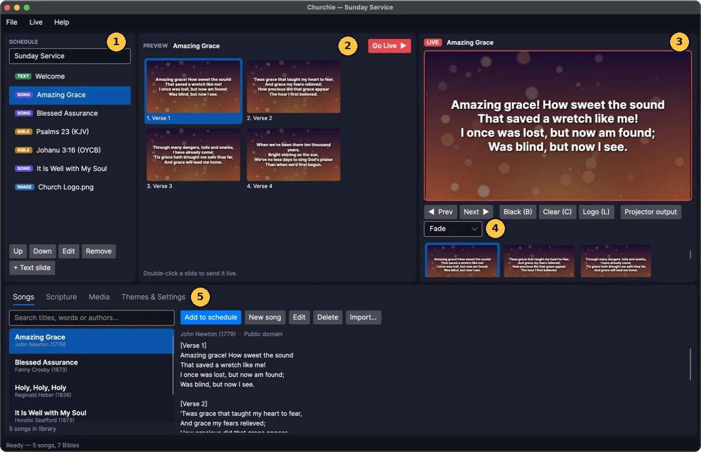
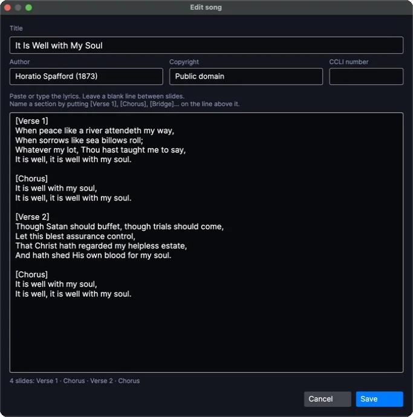
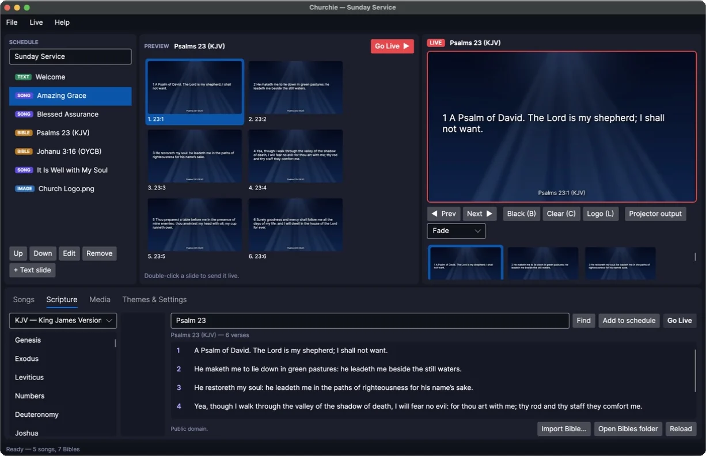
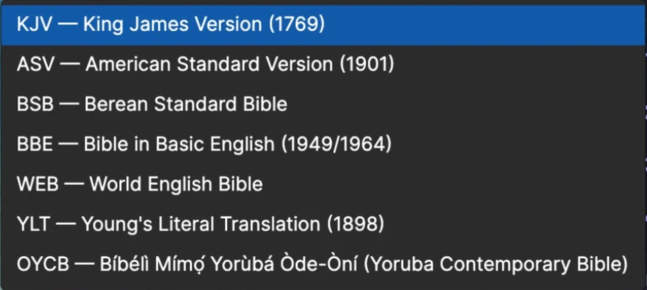
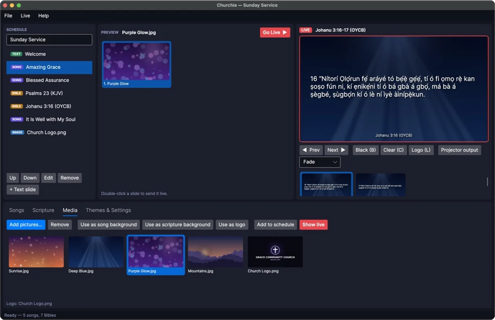
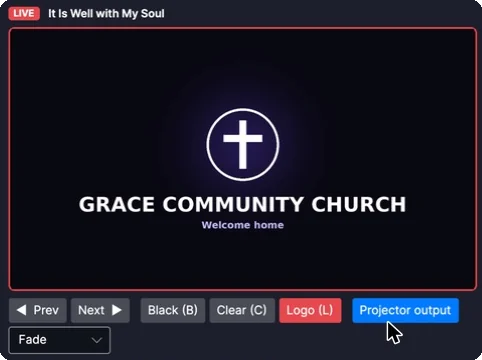

Getting started
Install Churchie
Download Churchie for your computer and follow the install steps on that page. It takes about two minutes. Churchie is free and doesn't need an account.
Your first launch
When Churchie opens for the first time you'll find three hymns in the song library (Amazing Grace, Blessed Assurance and Holy, Holy, Holy) and seven Bibles ready to use. Try them before adding your own songs:
- In the Songs tab at the bottom, double-click Amazing Grace. It's added to the schedule on the left.
- Click it in the schedule. Its verses appear in Preview.
- Double-click the first verse. It appears in Live, which is what the congregation sees.
- Press Page Down to move to the next verse.
That's the whole idea: plan in the schedule, check in Preview, show in Live.
The main window

- 1Schedule. The order of service: songs, readings, announcements and pictures.
- 2Preview. The slides of whatever you've selected, for checking before it goes live.
- 3Live. Exactly what's on the projector right now. The red frame reminds you it's live.
- 4Live controls. Previous and next slide, Black, Clear, Logo, the projector window and the fade speed.
- 5Tabs. Your song library, the Bibles, your pictures, and the look of the slides.
You can drag the gaps between the areas to make any of them bigger. The menus at the top have the same commands as the buttons, plus Help → Keyboard shortcuts.
Plan a service
The schedule is your order of service. Give it a name at the top (for example "Sunday Service, 8 November") and add items in the order you'll use them.
Adding items
| To add | Do this |
|---|---|
| A song | In the Songs tab, double-click it, or select it and click Add to schedule. |
| A Bible reading | In the Scripture tab, type the reference and click Add to schedule. |
| A picture | In the Media tab, select it and click Add to schedule. |
| Announcements or other words | Click + Text slide under the schedule, give it a title and type the text. Leave a blank line between slides. |
Each item has a coloured tag so you can tell them apart at a glance: SONG, BIBLE, TEXT or IMAGE.
Changing the order
- Up and Down move the selected item.
- Edit opens a song or text slide for changes. Editing a song here also updates it in your library.
- Remove takes the item out of the schedule (the song stays in your library).
Click an item to see it in Preview. Double-click it to send it straight to Live.
Churchie saves the schedule after every change and reopens it next time, so you can prepare during the week and pick up on Sunday. See Saving and backups to keep more than one schedule.
Songs
Finding a song
Type in the search box in the Songs tab. Churchie looks through titles, lyrics and authors, and shows title matches first. Click a song to read its words on the right and see its slides in Preview.
Adding a new song
- Click New song.
- Type the title. Author, copyright and CCLI number are optional.
- Paste or type the lyrics, leaving a blank line between slides.
- Click Save.

How lyrics become slides
- A blank line starts a new slide.
- Name a section by putting its name on the line above it:
[Verse 1],[Chorus],[Bridge]. - Plain headings work too:
Verse 2,Chorus,Bridge:,Pre-chorus,Tag,Ending, or short forms likeV1andC2. - Slides without a name are called Verse 1, Verse 2 and so on.
- If a chorus is sung several times, include it each time you want it to appear.
Long sections can be split automatically: in Themes & Settings → Split long song sections into, choose the most lines you want on one slide.
Editing and deleting
Select a song and click Edit or Delete. Deleting asks you to confirm, because it can't be undone.
Importing songs from other programs
Click Import… (or File → Import songs) and choose one or more files:
- Plain text (.txt). The file name becomes the title, or start the file with a line like
Title: Way Maker. The lyrics follow the same rules as the editor. - OpenLyrics (.xml). The open format used by OpenLP and other worship programs.
Scripture
Looking up a passage
In the Scripture tab, type a reference and press Enter (or click Find). The verses appear in the list and as slides in Preview. Then click Go Live to show them, or Add to schedule to save them for later.

Type references however you're used to writing them:
| You type | You get |
|---|---|
John 3:16 or jn 3 16 | John chapter 3, verse 16 |
1 Cor 13:4-7 or 1cor13:4-7 | 1 Corinthians 13, verses 4 to 7 |
Psalm 23 | The whole of Psalm 23 |
II Kings 2:11 or 2 Ki 2:11 | 2 Kings 2:11 (Roman numerals work) |
Rev. 21:4 | Revelation 21:4 |
Gen | Genesis chapter 1 |
You can also click a book in the list on the left and then a chapter number to open a whole chapter. If a reference doesn't exist (say, John 22), Churchie tells you what's wrong, such as how many chapters the book has.
Choosing a Bible version
Pick a version from the list above the books. Churchie includes seven, free to use and share:

Switching versions while a passage is showing in Preview reloads it in the new version. The reference at the bottom of each slide shows which version is on screen, and the line under the verse list shows the version's copyright.
Yoruba
Choose OYCB, the Yoruba Contemporary Bible (Bíbélì Mímọ́ Yorùbá Òde-Òní). You can type the Yoruba book names, like Johanu 3:16, Saamu 23 or Òwe 3:5, or the English ones you already know.

Verses per slide and verse numbers
In Themes & Settings, Scripture per slide puts one to four verses on each slide, and Show verse numbers turns the small numbers on or off.
Adding another Bible
Click Import Bible… in the Scripture tab and choose a Bible file. Churchie reads Zefania XML, OpenSong XML and OSIS XML, the formats most Bible downloads use, and adds it to the version list. Imported Bibles are kept in the Bibles folder (open it with Open Bibles folder); if you copy files there yourself, press Reload.
NIV, Amplified, NKJV, ESV, NLT and most modern versions are copyrighted and need a licence from their publishers, so Churchie can't include them. If your church has a licensed file, import it as above.
Pictures and backgrounds
The Media tab holds pictures you use in services: song backgrounds, your church logo, announcement slides.

- Add pictures… adds PNG, JPG, BMP, GIF or WebP images. Pictures 1920×1080 pixels or larger look best.
- Use as song background and Use as scripture background put the picture behind your lyrics or Bible verses.
- Use as logo makes it the picture shown when you press Logo. The line at the bottom shows the current logo.
- Show live puts the picture on the projector straight away. Add to schedule saves it for its place in the service.
- Remove takes it out of the list. The file on your computer isn't deleted.
Going live
Putting something on screen
- Double-click a slide in Preview to show it.
- Or select a slide in Preview and click Go Live (Ctrl+Enter, or ⌘+Enter on a Mac).
- Double-click an item in the schedule to show its first slide.
Once something is live, its slides are listed under the Live picture. Click any of them to jump straight there, for example back to the chorus.
Moving through slides
- Next ▶ and ◀ Prev, or Page Down and Page Up. Most presentation clickers send these keys, so they work too.
- After clicking in the Live area, the arrow keys and Space also move through slides.
Black, Clear and Logo

| Button | Key | What it does |
|---|---|---|
| Black | B | Fades the screen to black, for example during prayer or a sermon without slides. |
| Clear | C | Hides the words but keeps the background, so the screen still looks alive. |
| Logo | L | Shows your church logo (set it in the Media tab). Good before and after the service. |
Press the same button or key again to bring the slide back.
Fades between slides
Every change on the screen fades smoothly into the next. Choose the speed in the picker under the live buttons, or in Themes & Settings:
- Cut: changes instantly, with no fade.
- Quick fade: a quarter of a second.
- Fade: half a second (the default).
- Slow fade: one second.
The projector screen
The congregation sees the projector window: the Live slide, full size, with nothing else on it.

With a projector or TV
- Connect the projector or TV to your computer.
- Set it to extend your desktop, not mirror it. On Windows press Windows+P and choose Extend. On a Mac open System Settings → Displays and make sure the projector isn't set to mirror.
- In Churchie, open Themes & Settings and choose the projector under Projector screen.
- Click Projector output. The window opens full screen on the projector, and your laptop keeps showing the Churchie controls.
Click Projector output again to close it. The mouse pointer is hidden on the projector while it's full screen.
With one screen (practice)
Without a second screen, the projector window opens as a normal window that stays on top of Churchie. Move and resize it as you like, double-click it (or press F11) to make it full screen, and press Esc to close it.
Themes and settings
The Themes & Settings tab controls how slides look. Songs and scripture each have their own look, so lyrics can be big and centred while Bible verses are smaller and left-aligned. Changes show on screen immediately, even while something is live.

| Setting | What it changes |
|---|---|
| Text size | How big the words are. Very long slides shrink automatically to fit the screen. |
| Font | Type the name of any font installed on your computer, for example Arial or Montserrat. Leave it empty for the default. |
| Text colour and Background | Colours as hex codes, such as #FFFFFF for white. The small square shows the colour. |
| Bold, Shadow, UPPERCASE | Shadow helps words stand out on busy pictures. |
| Alignment | Left, centre or right, and top, centre or bottom of the screen. |
| Picture | A background picture. Choose… picks one, Clear removes it. |
| Darken picture | Dims the background picture so the words are easier to read. |
| Footer size | Size of the reference line under Bible verses. |
| Projector screen | Which display the projector window opens on. |
| Transition | The fade speed between slides. |
| Split long song sections into | The most lines on one song slide. Longer sections are split across slides. |
| Scripture per slide | How many verses go on each Bible slide (1 to 4). |
| Show verse numbers | Turns the small numbers before each verse on or off. |
Saving and backups
Schedules
The current schedule saves itself after every change. To keep a schedule for later, such as a wedding or Easter service, use the File menu:
- Save schedule (Ctrl+S) and Save schedule as… save it as a
.churchiefile. - Open schedule… (Ctrl+O) opens one again.
- New schedule (Ctrl+N) starts an empty one.
On a Mac, use ⌘ instead of Ctrl. A saved schedule includes copies of its songs, so you can open it on another computer.
Where Churchie keeps your things
Songs, settings and the current schedule are stored in one folder. Open it with File → Open data folder.
| Computer | Folder |
|---|---|
| Windows | %AppData%\Churchie |
| Mac | ~/Library/Application Support/Churchie |
| Linux | ~/.config/Churchie |
To back up, copy that whole folder to a USB stick or cloud drive. To move to a new computer, install Churchie there and copy the folder into the same place.
Keyboard shortcuts
On a Mac, use ⌘ wherever this table says Ctrl.
| Keys | Action |
|---|---|
| Page Down / Page Up | Next / previous slide (also works with clickers) |
| → ← or Space | Next / previous slide, after clicking in the Live area |
| B | Black screen on or off |
| C | Clear the words on or off |
| L | Logo on or off |
| Ctrl+Enter | Send the Preview slide live |
| Enter in the reference box | Look up the passage |
| Ctrl+S / O / N | Save / open / new schedule |
| F11 or double-click | Projector window full screen on or off |
| Esc | Close the projector window (when it's selected) |
The letter keys don't work while you're typing in a box, so you can't blank the screen by accident while searching for a song.
Troubleshooting
Windows says "Windows protected your PC"
Click More info, then Run anyway. Windows shows this for programs that aren't signed with a paid certificate. You'll only see it the first time.
My Mac says Churchie can't be opened
Click Done, then open System Settings → Privacy & Security, scroll down and click Open Anyway next to the message about Churchie. This happens once, because Churchie isn't notarised by Apple yet. If you're comfortable with Terminal, this does the same:
xattr -dr com.apple.quarantine /Applications/Churchie.appChurchie won't start on Linux
Make sure it's allowed to run with chmod +x Churchie/Churchie. On Debian or Ubuntu, install libice6, libsm6 and libfontconfig1.
The projector shows my whole desktop, or the same as my laptop
The screens are mirrored. Set the projector to extend the desktop (see The projector screen), then choose it under Projector screen in Themes & Settings and open Projector output again.
The words are too small or too big
Change Text size in Themes & Settings. Churchie shrinks slides that don't fit, so if a song looks small, its slides probably have too many lines: split them with a blank line, or set Split long song sections into.
A Bible I added doesn't appear
Use Import Bible…, which explains the problem if the file can't be read. Churchie reads Zefania, OpenSong and OSIS XML files. Files copied into the Bibles folder by hand appear after you press Reload.
A verse is missing
Some modern versions leave out a few verses that older manuscripts don't have, such as Acts 8:37 in the World English Bible. Churchie skips them and tells you if you look one up on its own. The KJV includes them.
Something else
Ask a question or report a problem on GitHub. It helps to say which computer you use and what you clicked before it went wrong.